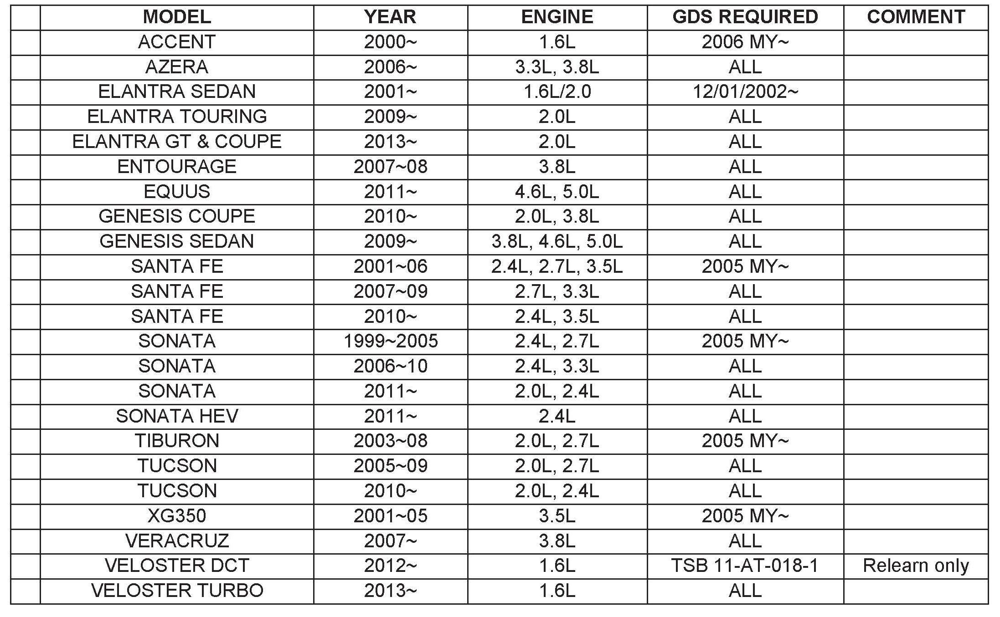
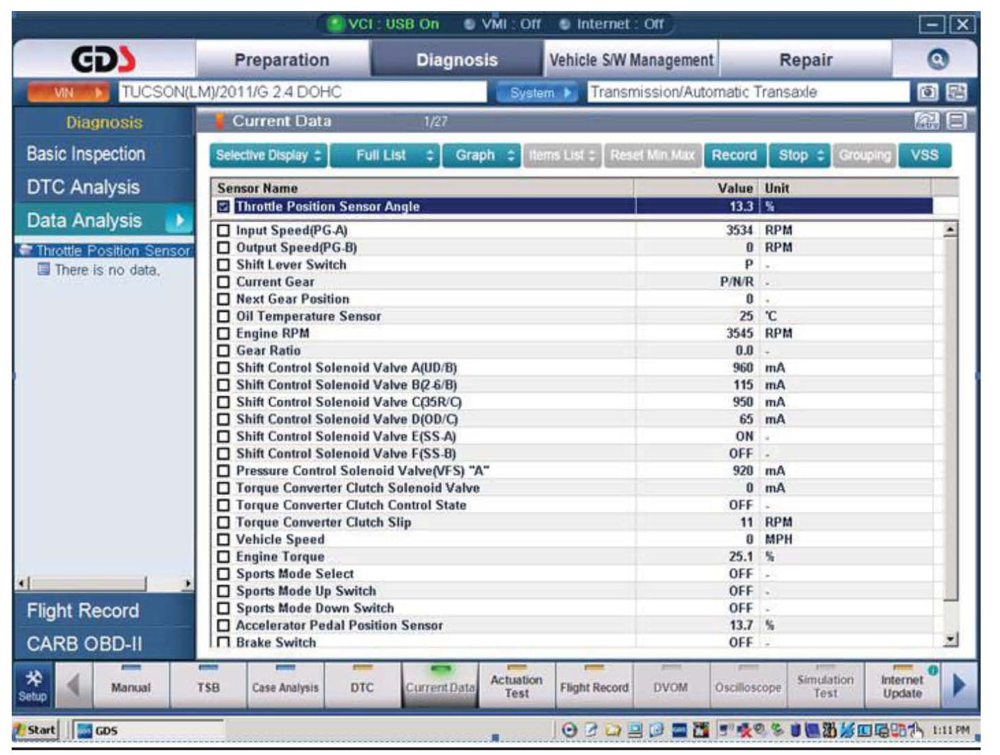
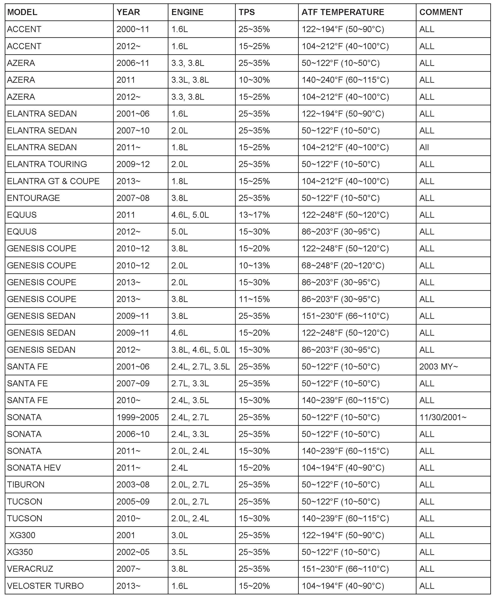

A/T Controls - ECM/TCM Reset And Relearn Adaptive Values
GROUPAUTOMATIC
TRANSMISSION
NUMBER
12-AT-017
DATE
AUGUST 2011
MODEL
ALL
SUBJECT
AUTOMATIC TRANSAXLE CONTROL MODULE -
RESET AND RELEARN ADAPTIVE VALUES
This TSB supersedes TSB 11-AT-008-1 to include 2013 vehicles.
NOTE
After replacing a transaxle or PCM/TCM or reprogramming the PCM/TCM, follow this procedure to reset and relearn the adaptive learning to improve shift quality.
Description:
The PCM or TCM contains logic to adjust solenoid duty and line pressure as needed to compensate for normal clutch wear over the life of the transaxle. This bulletin provides the procedures necessary to reset (erase) and "relearn" the PCM/TCM adaptive values.
After the following repairs have been completed, the PCM/TCM adaptive values must be reset in order to provide optimum shift quality:
^ Replace automatic transaxle or PCM/TCM
^ Reprogram or exchange a PCM/TCM from another vehicle
Applicable Vehicles: ALL
Warranty Information: Normal Warranty applies
I. RESET PCM/TCM ADAPTIVE VALUES WITH GDS:
SERVICE PROCEDURE
1. Attach a GDS and select VIN and A/T menu.
2. From the main screen, select "Option Treatment"
3. Select "Resetting Auto T/A values" and follow the screen prompts.

GDS must be used to reset the adaptive learning for the following vehicles.
II. RELEARN ADAPTIVE VALUES:

1. Attach a GDS and select VIN and A/T menu, Current Data and Throttle Position Sensor.

3. Drive the vehicle until the ATF temperature is within the range shown.
4. Request an assistant to monitor the GDS.
Accelerate from a stop at the TPS specification while the transmission shifts through gears 1-2-3-4-5-6-7-8 (if equipped) and decelerate slowly to a stop. Repeat 5 times.
NOTE
Hold the accelerator pedal steady during the upshifts.
Do not exceed local speed limits.
5. Stop the vehicle and move the shift lever from N to D and N to R, stopping 3~5 seconds in each gear. Repeat 5 times.